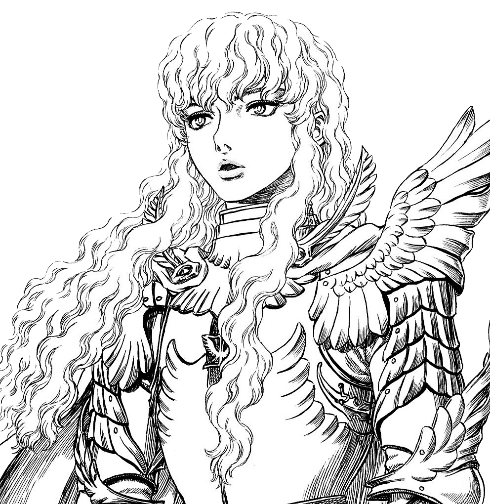

Han Wen Fu
fuhanwen2002@icloud.com
McGill University

About Me
Hey! I'm a full-time Computer Science student at McGill University, currently in U2. I'm very introverted and I like drawing, playing piano and reading mangas!

Griffith from Kentaro Miura's Berserk
I recently started drawing in August 2022. (Ha, What a noobie!)
I'm currently learning to draw anime-like characters
by following tutorials on Youtube.
Here's my art of Diego Brando from JoJo's Bizarre Adventure:

BERSERK
His name is Guts, the Black Swordsman, a feared warrior spoken of only in whispers. Bearer of a gigantic sword, an iron hand, and the scars of countless battles and tortures, his flesh is also indelibly marked with The Brand, an unholy symbol that draws the forces of darkness to him and dooms him as their sacrifice. But Guts won't take his fate lying down; he'll cut a crimson swath of carnage through the ranks of the damned—and anyone else foolish enough to oppose him! Accompanied by Puck the Elf, more an annoyance than a companion, Guts relentlessly follows a dark, bloodstained path that leads only to death...or vengeance.(Source: Dark Horse)

JoJo's Bizarre Adventure Part 7: Steel Ball Run
Set in the United States in 1890, the story follows Johnny Joestar, a paraplegic ex-jockey, and Gyro Zeppeli, master in a mystic art named the Spin, as they compete with a vast number of others in the Steel Ball Run race: a mad-dash across America for a grand prize of 50 million dollars.(Source: JoJo's Bizarre Wiki)
Oyasumi Punpun
Meet Punpun Punyama. He’s an average kid in an average town. He wants to win a Nobel Prize and save the world. He wants the girl he has a crush on to like him back. He wants to find some porn. That’s what he wants, but what does he get…?(Source: Viz Media)